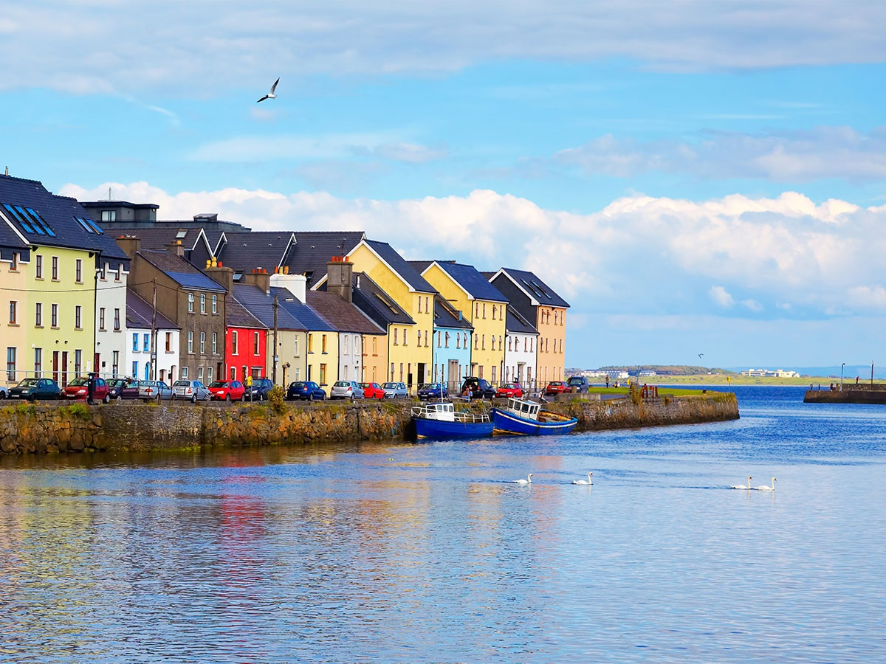

Descoperă Galway - O incursiune în inima culturii și tradițiilor irlandeze
Galway este un oraș vibrant și cultural situat în vestul Irlandei, oferind o gamă variată de atracții pentru vizitatori:
-

Eyre Square - Piață centrală
O piață centrală plină de viață, înconjurată de magazine, restaurante și evenimente culturale.
-

Cartierul Claddagh - Tradiție irlandeză
Această zonă este cunoscută pentru inelul Claddagh și pescuitul tradițional.
-

Catedrala Galway - Arhitectură sacrală
Impunătoarea catedrală este o atracție iconică, cu arhitectură impresionantă și vitralii colorate.
-

Quay Street - Ambianță autentică
O stradă pitorească cu pub-uri tradiționale, restaurante și artizani de suveniruri.
-

Promenada Salthill - Relaxare la malul mării
O plimbare plăcută pe promenada de-a lungul coastei, oferind vedere la Oceanul Atlantic.
Concluzii
Galway este un punct de întâlnire al culturii, muzicii și tradițiilor irlandeze, oferind o experiență autentică a orașului.